Last 2 weeks, built ALU and memory hierarchy.
Want to see what a computer should have for specification.
Turing: Universal Turing Machine - one could simulate all others.
"Turing complete"
Practice: von Neumann Architecture - general computing machine
Stored Program Computer.
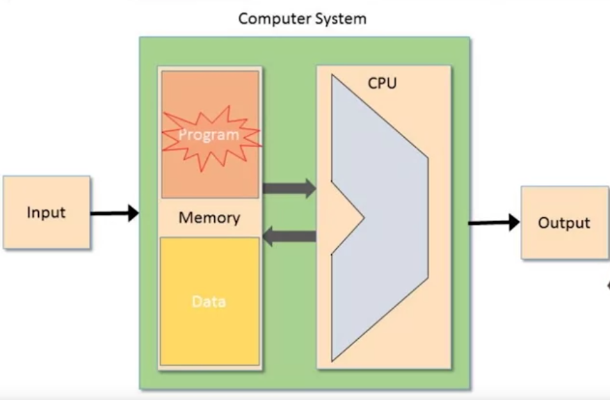
Inside Memory is a program telling it what to do.
The software can change - letting computer do different things.
Machine Languages:
Program ...
Hardware going instruction by instruction.
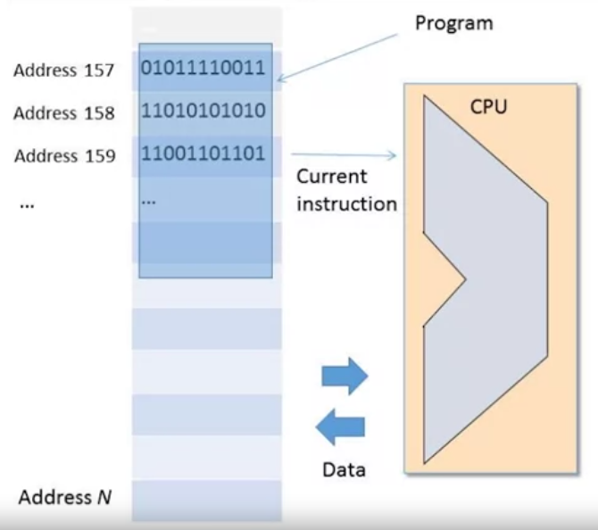
Operations:
Program a sequence of instructions. Tell what to do.
Other element: how do we know what is the next instruction?
3rd: Have to tell hardware what to operate on. (where are the 2 numbers to add together?)
Once have machine language => can tell hardware what to do.
Humans program in high level programming language => then compiler translate to machine language.
Idea of Mnemonics:
Dealing directly with machine language. Work machine language easier.
Instructions are sequences of bits.
=> Instead of 0100010 0011 0010
=> ADD R3 R2
e.g. 2nd and 3rd referring to a Register somewhere.
Point to those direclty
Syntactic form doesn't really exist, just convenient for human readability
Let someone write in this 'assembly language form'
An Assembler program will convert it to bit form from assembly language form
Symbols:
To access memory location. e.g. add 1 to Mem[129]
Idea is really to hold 'index' => instead of Mem129. Allow user to write symbolic name for this memory location. Let assembler translate this word to a specific memory location.
Machine language is interface between hardware and software.
Need to specify what operations are supported, what operate on, how program controlled?
Done 1:1 correspondence to actual hardware architecture
Corerspond to what's implemented in hardware:
Arithmetic Operations: add/subtract
Logical: and/or
Flow control: goto, if... then
Differences between machine langs:
Richness of set of operations (division, bulk copy)
Data types (primitives: width, floating point, 8bit vs 64bit etc)
Addressing:
Accessing a memory location is expensive. Need to supply a long address, get into memory contents into CPU takes time.
Solution: Memory Hierarchy
Instead of 1 big block of memory. A sequence of memory, smaller one, then cache then main memory then disk.
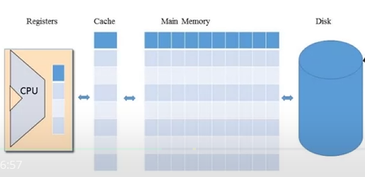
Registers: within CPU - how are these handled?
Answered this module level.
CPU: Has a few easily accessed registers. Number and function are a central part of machine language.
What register types here?
Addressing Modes:
Register (R1, R2)
Direct (Add R1 to Memory location 200)
Indirect (Add R1, @A) => @A pointing to location 200
Immediate (add 73 to R1...). Value 73 held in the instruction itself as a constant.
I/O Devices: KB + Mouse, Camera, Sensors, Printers...
CPU need a protocol to talk to them - "Drivers" know these protocols.
Flow Control:
3 main elements:
16-bit machine consisting of:
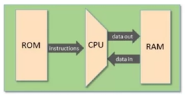
Software: using Hack Machine Language
16-bit A-instructions
16-bit C-instructions
Hack program = sequence of instructions written in Hack machine language
Control:
Uses a 'reset' button
Hack Machine recognizes 3 registers:
D-register: Data value (16-bit)
A-register: data or address value (16-bit)
M: 'selected memory register'. 16-bit RAM register addressed by A.
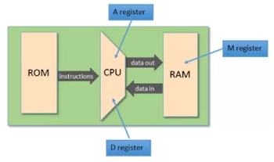
A-instruction:
Syntax: @value => where value is non-negative decimal constant or symbol.
@21
Semantics: sets A register to value
Side effect: RAM[A] becomes selected RAM register (M).
A register to 21.
RAM[21] becomes selected RAM register (M).
// Set RAM[100] to -1 @100 //A=100 M=-1 //RAM[100]= -1
// Set RAM[100] to -1
@100 //A=100
M=-1 //RAM[100]= -1
C-instruction:
dest = comp ; jump
3 fields. Destination, computation and jump. (comp, jump optional)
computation: anything from set of mnemonics.
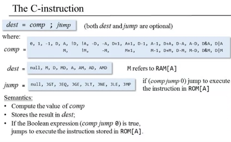
dest: 8 possible detinations.
null => don't store
M (RAM [A])
Store both in M and D. Hack lets us store in multiple locations.
jump: null, JGT, JEQ, JGE, JLT, JNE, JLE, JMP
Always compare the comp / result of computation to 0
Semantics:
Compute value of comp.
Store result in dest.
If boolean expression compu jump 0 is true, jumps to execute instruction stored in ROM A.
//Set D reg to -1 D=-1 //Set RAM 300 to value of D register minus 1 @300 //A=300 to tell where to look M = D-1
//Set D reg to -1
D=-1
//Set RAM 300 to value of D register minus 1
@300 //A=300 to tell where to look
M = D-1To do something in memory, use an A instruction to tell where to go (which sets M there).
//Jump example // If (D-1 == 0 ) jump to execute instruction in ROM[56] @56 //A instruction to tell which memory addr D-1;JEQ //jump if eq-9
//Jump example
// If (D-1 == 0 ) jump to execute instruction in ROM[56]
@56 //A instruction to tell which memory addr
D-1;JEQ //jump if eq-9Also note there's an unconditional jump (0;JMP)
A and C instructions
Hack Program is sequence of instructions written in the Hack machine language.
2 ways to express the same semantics: Symbolic or Binary
Once translated to binary can load and execute onto the computer.
Semantics Set A register to value.
A Instruction: Symbolic and Binary Syntax
Syntax: @value
Value is non-negative decimal constant or a symbol referring to one.
e.g. @21 => Sets A register to 21
Binary syntax => 0 value where value is a 15-bit binary numbers.
e.g. 0000000010101 => first 0 says it's an A instruction. 15-bit
C Instruction:
Symbolic Syntax
dest = comp ; jump
111 a c1 c2 c
Binary Syntax: 1 1 1 a c1 c2 c3 c4 c5 c6 d1 d2 d3 j1 j2 j3
Table relating comp to binary equivalent:
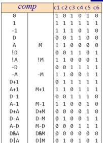
The comp above divided into a=0 and a=1 (left side a=0)
e.g. D+1 is under the a=0 bit and c1-c6 => 001110
Compare with:
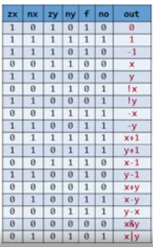
Destination field:
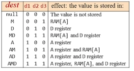
Jump field:
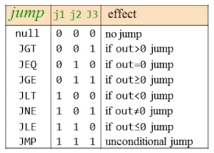
8 jump conditions
Hack computer platform:
I/O - Keyboard to enter input, and Screen to enter display output
High level approach: numerous libraries, enable text, graphic, animation, audio video...
Low level: bits => how?
For display use a screen memory map:
A matrix of 256 row, 512 column in Hack: Can turn pixel on or off.
Sequence of 16 bit values. => 8k 16-bit words. 1 bit per pixel
Row 0 done with 32 x 16-bit numbers.
Row 1 with 32-63... etc
Set a single pixel on/off. Set pixel(row,col) on/off:
i = 32 x row + col/16 (int division ignores remainder).
word = Screen[32 x row + col/16]
word = RAM[16384 + 32 x row + col/16]
Set (col%16)th bit of word to 0 or 1.
Commit word to the RAM
For Keyboard:
Hack Keyboard:
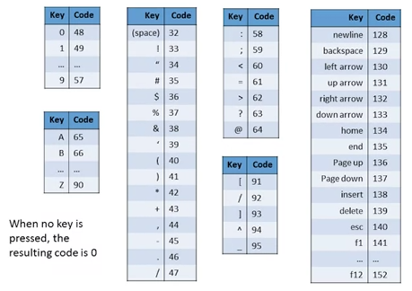
Unicode vs Ascii can make connection between these codes.
Upon idle, keyboard map = 0
In Hack: probe contents of RAM[24576] (the KB register)
Translation to binary.
"Hack assembler" => Assembly program converted to binary code by hack assembler.
Can load the binary code into Hack computer and develops it.
CPU Emulator - can load files into the instruction memory.
Hack Programming -
4.6 => Register, memory
4.7 => branching, variables, iteration
4.8 => Input/output
Work with registers and memory:
D: data register
A: address/data register
M: currently selected memory register M=RAM[A]
e.g. store number 10 in register D.
Can't do it directly:
@10 D=A
@10
D=AIncrement D? Can be done in D=D+1
//D=RAM[17]
@17 D=M
@17
D=MNotes on hack assembly code: Whitespace ignored. There's an implicit line number per instruction, within the symbolic view of the program (non-binary version of the program)
How to terminate program?
"null instructions / nop slide" - hack technique where you slide the flow of control into an area of memory where they loaded malicious code.
Suggestion - end in infinite loop:
@6 0;JMP
@6
0;JMPSet of 16 built in symbols:
R0 => value 0
R1 => value 1, ... R15 =>15
Generally use this for constants -
e.g. Set RAM[5] = 15
@15
D=A
@R5
M=D
=> Easier to read as "R5" instead of @5.
CASE SENSITIVE => R4 != r4.
Also:
SCREEN 16384
KBD 24576
SP 0
LCL 1
ARG 2
THIS 3
THAT 4
Explained in later course.
Hard to do if else...
e.g.
@R0 D=M // D=RAM[0] @8 D;JGT // If R0 > 0 @R1 M=0 //RAM[1] =0 @10 0;JMP //end of program @R1 M=1 @10 0;JMP
@R0
D=M // D=RAM[0]
@8
D;JGT // If R0 > 0
@R1
M=0 //RAM[1] =0
@10
0;JMP //end of program
@R1
M=1
@10
0;JMPNow can make easier to read with symbolic references
@R0 D=M // D=RAM[0] @POSITIVE D;JGT // If R0 > 0 @R1 M=0 //RAM[1] =0 @END 0;JMP (POSITIVE) //declare a label @R1 M=1 (END) @END 0;JMP
@R0
D=M // D=RAM[0]
@POSITIVE
D;JGT // If R0 > 0
@R1
M=0 //RAM[1] =0
@END
0;JMP
(POSITIVE) //declare a label
@R1
M=1
(END)
@END
0;JMP@LABEL translates to @n where n is instruction number following (LABEL) declaration
Abstraction of container with name and value.
Only 16-bit variable type available. Use a register to represent a variable.
Flip RAM[0] and RAM[1] //temp = R1 //R1 = R0 //R0 = temp @R1 D=M @TMP M=D //sets @TMP = value RAM[1] @R0 D=M @R1 M=D //Set R1 = R0 @TMP D=M @R0 M=D //Set R0 = TMP (END) @END 0;JMP
Flip RAM[0] and RAM[1]
//temp = R1
//R1 = R0
//R0 = temp
@R1
D=M
@TMP
M=D //sets @TMP = value RAM[1]
@R0
D=M
@R1
M=D //Set R1 = R0
@TMP
D=M
@R0
M=D //Set R0 = TMP
(END)
@END
0;JMP
@TMP => asks for available memory register (n)
Use it to represent variable TMP. @TMP => @n
Using symbolic programs - don't need to worry about direct line # reference when running a program. Use relative numbers autogenerated. Can reuse this code elsewhere (copy paste etc).
Compute 1+2+...+n
Implement Loop:
n=R0
i=1
sum=0
LOOP:
if i>n goto STOP
sum=sum+i
i=i+1
goto LOOP
STOP:
R1=sumn=R0
i=1
sum=0
LOOP:
if i>n goto STOP
sum=sum+i
i=i+1
goto LOOP
STOP:
R1=sumNow to implement:
@R0 D=M @n M=D //n=R0. @i M=1 //i=1 @sum M=0 //sum=0 (LOOP) @i D=M @n D; JGT // jump if M > D @sum D=M @i D=D+M @sum M=D //sum = sum+i @i M=M+1 //i=i+1 @LOOP 0;JMP (STOP) @sum D=M @R1 M=D //RAM[1] = sum (END) @END @0;JMP
@R0
D=M
@n
M=D //n=R0.
@i
M=1 //i=1
@sum
M=0 //sum=0
(LOOP)
@i
D=M
@n
D; JGT // jump if M > D
@sum
D=M
@i
D=D+M
@sum
M=D //sum = sum+i
@i
M=M+1 //i=i+1
@LOOP
0;JMP
(STOP)
@sum
D=M
@R1
M=D //RAM[1] = sum
(END)
@END
@0;JMPIf trying to loop through an array.. 'array' unknown to us just yet.
Segment of memory where we know the length.
Assume array start in register 100, and n=10
//for (i=0; i<n; i++) // arr[i] = -1 //assume arr: 16 = 100 //n:17 = 10 //Set arr = 100 @100 D=A @arr M=D //n=10, i=0 ... you know how to do this. (LOOP) //if i==n, goto END @i D=M @n D=D-M @END D;JEQ //RAM[arr+i] = -1 @arr D=A @i A=D+M //set A to i+arr M=-1 //i++ @i M=M+1 @LOOP 0;JMP (END) @END 0;JMP
//for (i=0; i<n; i++)
// arr[i] = -1
//assume arr: 16 = 100
//n:17 = 10
//Set arr = 100
@100
D=A
@arr
M=D
//n=10, i=0 ... you know how to do this.
(LOOP)
//if i==n, goto END
@i
D=M
@n
D=D-M
@END
D;JEQ
//RAM[arr+i] = -1
@arr
D=A
@i
A=D+M //set A to i+arr
M=-1
//i++
@i
M=M+1
@LOOP
0;JMP
(END)
@END
0;JMPVariables that store memory addresses like arr, i are called pointers.
Hack pointer logic: whenever we have to access memory using a pointer, need a instruction like A=M.
Set address register to contents of some memory register.
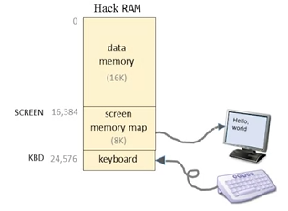
So drawing something manipulating 16384-24575
Task: draw filled rectangle 50 pixels long, 16 wide from upper left corner.
(so 16384-16433, first 16 bits of each of those rows)
Sample of Keyboard:
Read contents of RAM[24576] / address KBD
If register 0, no key pressed.
Compilation:
close to what we did starting from high level code => Machine Language
//for i=0...
=> via Compiler
=> @i; M=0; (LOOP);...
Project 4 Overview
2 programs: simple algebraic program and another interactive.
e.g.
Mult: R0 * R1 = R2, Set R2
Fill: infinite loop that listens to KB, probe if something is pressed. Then blacken/whiten screen.
=> Ensure while testing select 'no animation'. Manually test.
Testing overview:
Write prog.asm, edit in text editor. Load to CPU emulator.
Run it, check results.
Keep variable names lowercase
Labels uppercase